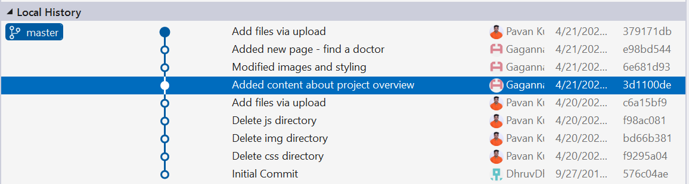
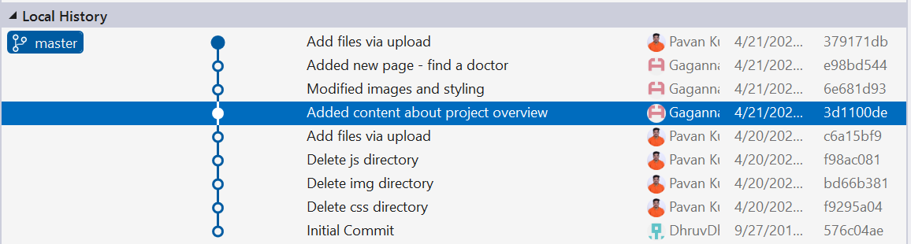

I'm Madhu Kiran,played a key role in developing the Appointment and Data Visualization pages. For the Appointment Booking page, I created a user-friendly interface for inputting personal details and incorporated interactive features for easy editing. In the Data Visualization page, I designed charts and an ERD for effective data management.Using CSS, I ensured a polished web aesthetic. Grateful for the team's collaborative effort and support.GitHub

I'm Pavan Pabba, Experienced Data Analyst.I specialize in MPP databases,ETL tools and Visualization tools.Proficient in Python.I'm a certified AWS Solutions Architect Associate. In the Mediplus project, I led the design of webpages using HTML,CSS,and JavaScript,focusing on signup, signin, and index.html pages.I enabled CRUD operations and javascript elements,collaborating closely with my team to ensure timely completion.GitHub

I'm Sravanth, Experinced Data Analyst.Proven ability to translate data insights into strategic decisions. Seeking to leverage my analytical skills in a dynamic and innovative setting. My contributions include designing the "doctorsinfo" webpage which uses the search function by implememting CRUD operations and also the "aboutus" webpage consisitng of our team-mates information using HTML and CSS.GitHub

I'm Gagan, Experienced Data Engineer. I specialize in turning raw data into actionable insights.I played a pivotal role in designing the Welcome and Hospital pages, including an interactive navigation menu for the Welcome page. Working with JS, I facilitated read operations on the Hospital Data page and enhanced the web look using CSS. Team collaboration was crucial throughout the project, with everyone providing support when necessary.GitHub

 
